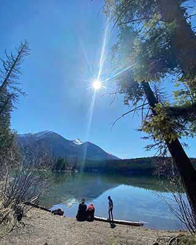
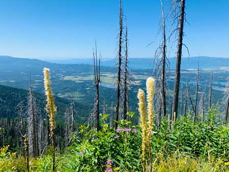

Hover to Show - Info
Hover to Hide - Info
Holland Lake Falls is a 3.3 mile heavily trafficked out
and back trail located near Condon, Montana that features a
lake and is good for all skill levels. The trail offers a
number of activity options and is best used from May until
October.

Holland Lake

Mount Aeneas
Mount Aeneas Summit Trail is a 6.2 mile moderately trafficked
out and back trail located near Bigfork, Montana that features
a lake and is rated as difficult. The trail is primarily used
for hiking and is best used from May until October.